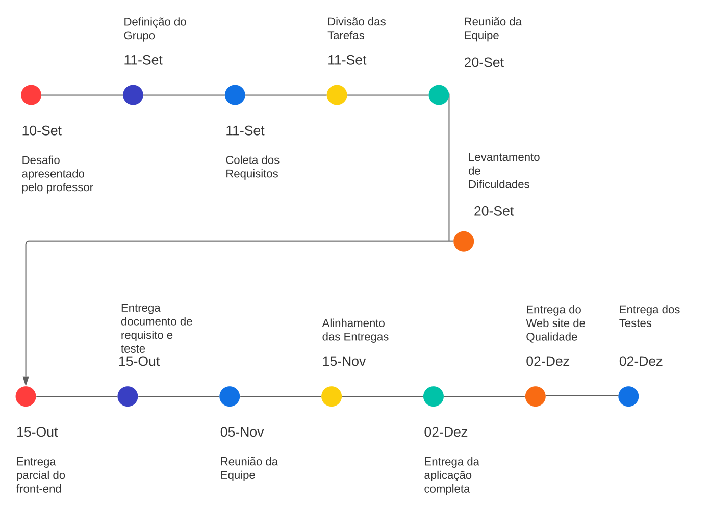

Nos foi proposto o desenvolvimento de um aplicativo de fácil uso, que atenda as necessidades dos motoristas de uma corporativa.
O desenvolvimento é destinado a uma empresa de logística rodoviária onde seus colaboradores podem realizar a
marcação de vez em uma fila de entregas e descrever suas características, realizar a visualização das suas viagens e
a visualização dos avisos da empresa.
Antes do desenvolvimento do APP, a forma utilizada pelos motoristas era possível apenas através de um site, sendo possivel realizar
as operações, porém de uma forma muito mais complexa e demorada.
O aplicativo tem como objetivo facilitar o dia a dia dos motoristas, trazer segurança e qualidade.
elementos de qualidade do processo
. análise
Discussões em sala de aula contribuíram para formar a ideia de como fazer um sistema simples e util,
utilizando tecnologias mais atuais, para substituir o sistema antigo, atendendo plenamente todos as necessidades dos usuarios com facilidade.
. projeto
Aplicação desenvolvida utilizando Flutter.
. implementação
Logica de programação visando garantir a funcionalidade, usabilidade, eficiencia e a manutenibilidade
. testes
Para a realização dos testes usamos o package Mockito, foram feitos testes unitários, testes de widgets e testes de integração
artefatos gerados
. modelagem de dados
Nos foi disponibilizado API's para a obtenção de dados via GET e POST, onde trabalhamos com os dados obtidos em formato
JSON e com estes dados desenvolvemos o projeto.
. requisitos obtidos
Obtivemos como requisitos uma documentação contendo a mesma, onde realizados o desenvolvimento através dela.
Nesses requisitos tínhamos as informações de como tratar tais dados mediante a API, os filtros necessários, as formas
de validação das informações, de forma geral todo do projeto.
metricas de qualidade
Nosso aplicativo passou por diversos testes com o intuito de mitigar os detalhes e de forma assertiva
garantir a integridade do software. Nos preocupamos com as Heurísticas de Nielsen, onde deixamos o software o mais
simplificado possível e intuitivo, utilizando coloração diferentes para os diferentes tipos de caminhões.
Também utilizamos o padrão de arquitetura MVC para melhorar a organização e utilizamos comentários no código, dessa forma
simplificado o entendimento para próximos desenvolvedores que utilizarem o código para desenvolver melhorias no programa ou alterações.
cronograma

relatório de teste
Realizamos alguns tipos de testes no desenvolvimento do projeto. Fizemos uma validação de login onde aplicamos a verificação
dos dados onde a permissão de logar no aplicativo esta funcional, realizamos testes de efetividade dos dados tragos pela API,
verificando a certeza dos dados obtidos, fizemos a validade do tipo de veículo utilizado pelo motorista entre outros
testes mais sucintos para validar a efetividade e segurança do programa.
avaliação
Durante todo o processo de desevolvimento do aplicativo, foi possivel ver a necessidade e a diferença que faz ter um projeto bem estruturado,
bem analisado, e que segue métricas da Qualidade de Software.
Também foi possivel praticar e aumentar conhecimento da ferramenta Flutter, praticamos com o Postman a tratar requisições na API e
também aprendemos realizar testes utilizando Mockito.